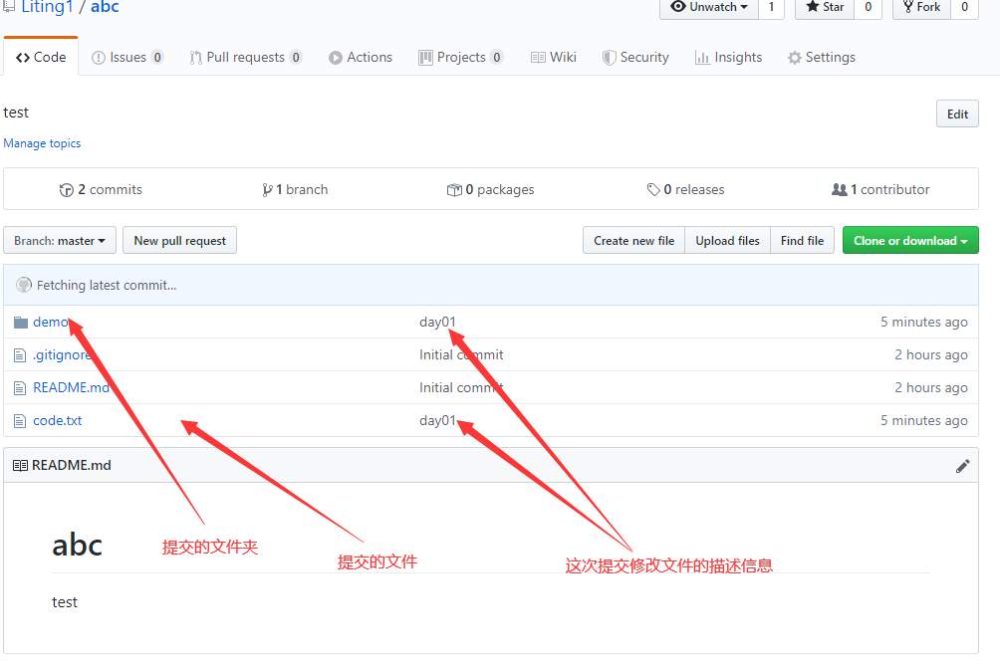

git 入门
git客户端下载
下载地址 选择你对应的系统版本，傻瓜式安装(一直点下一步就行)
注意最好不要安装在中文目录下面！！！
注册github账号
注册地址 注册一个账号，这个账号以后会经常使用，不要忘记密码了
账号注册完毕之后需要进行邮箱验证通过
git客户端命令的使用
第一次使用之前配置用户信息
git config --global user.name "你的用户名"
git config --global user.email "你的邮箱地址"
在桌面或者文件夹里任意位置鼠标右键菜单选择Git Bash Here出现如下窗口
说明： git config 为配置的命令，--global 为全局配置 配置的选项 配置的值
-
配置完成之后使用
git config --list命令查看配置信息 -
如果配置是配置字段打错字了可以使用
git config --global --unset 对应添加的字段名来删除对应的字段
github 创建远程仓库
- 注册完成之后登陆github


使用克隆的方式将本地仓库推送到远程仓库
注意： 不要忘记之间的空格！！！
注意： 第一次安装使用一定要配置用户信息！！！
新生成的文件夹名字和仓库的名字一样
-
在克隆的文件夹中添加需要提交到远程仓库的文件
注意： 该文件夹中的
.git文件夹不能删除(默认该文件夹为隐藏文件夹)，不能够提交空的文件夹-
然后输入一下命令
由于我设置 ssh key 所以在提交的时候不需要输入密码(设置ssh key 见下方ssh key设置)
-
此时已经提交完毕回到远程仓库查看提交的信息 
-
以后提交文件重复步骤5即可
设置仓库为github静态页面
-
修改完毕之后将会生成仓库静态文件的地址为
https://github用户名.github.io/仓库名==> https://liting1.github.io/abc -
访问仓库内的静态文件
本地仓库的创建
-
在电脑上新建一个文件夹，在文件中鼠标右键选择Git Bash here
-
git init
- 创建一个空的Git存储库或重新初始化现有存储库
- 会在项目目录下创建一个隐藏的 .git文件
-
git add . 将文件内容添加到索引中(跟踪当前目录下文件)
- 常用的选项 . 表示将此目录下的所有文件添加到索引中
- 后面使用目录下的 完整路径及文件名 表示添加单个索引文件
-
git status
- 显示工作树状态
-
git commit -m '更改说明'
- 记录对存储库的更改(将暂存区里的改动给提交到本地的版本库)
-
git remote -v
- 查看关联的远程仓库的详细信息
-
git remote add origin 地址
- 添加远程仓库的关联
-
git remote remove 远程仓库的名字
- 删除远程仓库的关联
-
git diff
- 显示当前版本和上一个版本修改的内容
-
git log
- 可以查看提交的历史记录，以便要回退到哪个版本
-
git log --pretty=oneline
- 修改显示历史记录的格式
-
git reflog
- 查看命令历史，以便要确定回到未来的哪个版本
-
git reset --hard "指定版本的commit id"
- 调整到指定的版本去
-
git reset --hard HEAD^
- 回到上一个版本
-
git reset --merge
- 回退到 git pull 冲突之前的版本
-
git branch
- 查看本地分支
-
git branch 分支名称
- 创建本地分支
-
git checkout 分支名称
- 切换的指定的分支
-
git merge 分支的名称
- 合并分支
- 在需要合并目标分支之前先切换到需要合并的分支上
-
git clone 需要克隆的项目地址
- 将存储库克隆到新目录中
-
git pull
- 默认是使远程的主分支与当前所在分支合并
-
git pull origin next:master
- 使远程的next分支与本地的主分支进行合并
-
git pull origin next
- 使远程的next分支与当前所在的分支进行合并
-
git push origin master
- 将本地的master分支推送到远程的master分支上，如果远程分支不存在则会创建远程
-
git push origin --delete master
- 将远程的 master 分支删除
-
git push -u origin master -将本地的master分支推送到远程的master分支，同时设置默认的主机origin，以后git push时就不用加参数了
在本地创建ssh key
-
在git 客户端输入命令
- ssh-keygen -t rsa -C
- 生成本地 SSH 密钥
- 然后一直回车使用默认值
- 最后就会在
C:\Users\Administrator\.ssh路径下看到如下两个文件 ;
;
-
用记事本打开id_rsa.pub 文件,复制其中的内容
-
回到GitHub网站 点击设置

-
选择 SSH and GPG keys

-
新创建一个SSH key

-
把之前的id_rsa.pub文件中复制的内容粘贴到 key 里面,title 可以随意填写
-
以后提交远程仓库就不需要输入密码。而且还可以使用 ssh 方式克隆远程地址
git 常用命令
-
git clone 'github路径' ==> 克隆GitHub上的一个项目
-
git init ==> 把当前目录变成Git可以管理的仓库
-
git add "文件名"/ . ==> 需要添加到仓库的文件 / 如果是一个点那么久代表添加所有文件
-
git commit -m "提交文件的描述信息" ==> 把文件提交到仓库
-
git log ==> 可以查看提交的历史记录，以便要回退到哪个版本
-
git log --pretty=oneline ==> 修改显示历史记录的格式
-
git reflog ==> 查看命令历史，以便要确定回到未来的哪个版本
-
cat "文件名" ==> 浏览对应得文件
-
git reset --hard "指定版本的commit id" ==> 调整到指定的版本去
-
git reset --hard HEAD^ ==> 回到上一个版本
-
git status ==> 查看仓库的当前状态
-
git diff ==> 显示当前版本和上一个版本修改的内容
-
git mv old文件名 new文件名 ==> 修改指定的文件名
-
git remote add origin '你的远程库地址' ==> 光联到远程库
-
git pull --rebase origin master ==> 获取远程库于本地同步合并
-
git push -u origin master ==> 把本地库的内容推送到远程